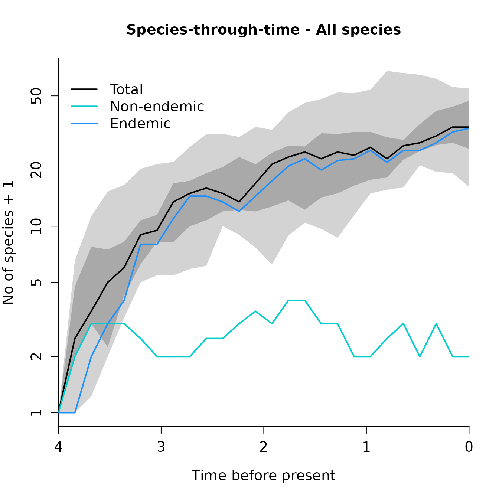
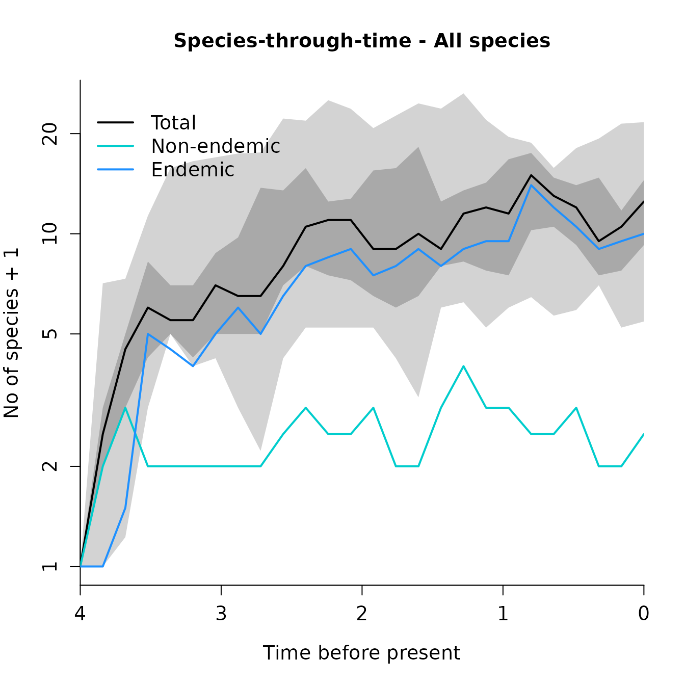
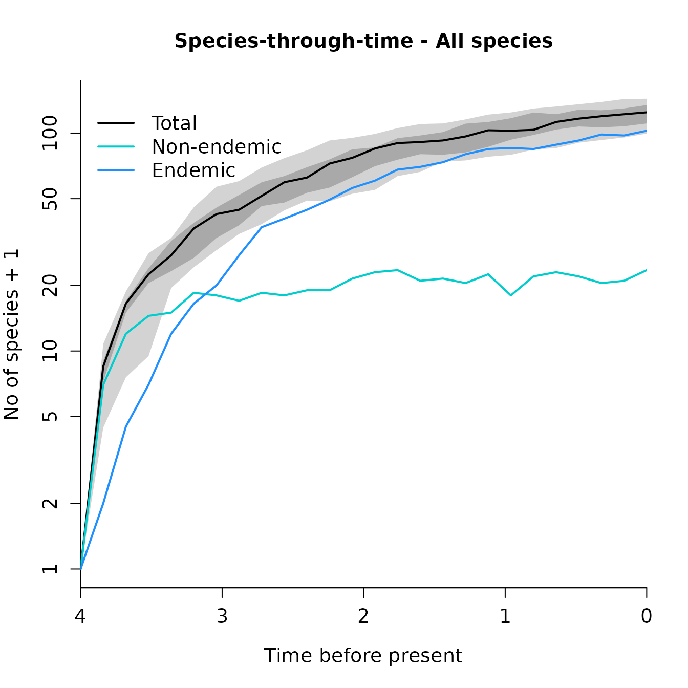

Demo simulating islands
Luis M. Valente, Albert B. Phillimore, Rampal S. Etienne
19 May 2015
Source:vignettes/demo_sim.Rmd
demo_sim.RmdDAISIE – Dynamic Assembly of Island biotas through Speciation, Immigration and Extinction
Citation: Valente LM, Phillimore AB, Etienne RS (2015) Equilibrium and non- equilibrium dynamics simultaneously operate in the Galápagos islands. Ecology Letters, 18(8), 844-852. https://doi.org/10.1111/ele.12461.
Simulating islands
The function DAISIE_sim allows simulation of DAISIE
models and plots the results. The user specifies the parameters to be
simulated, the number of replicates, the length of the simulation
(typically the island age), and the number of species in the mainland
pool.
When the plot_sims option is set to the default (TRUE) the function will produce a species- through-time plot showing the accumulation of total, endemic and non-endemic species through time, as well as confidence intervals for the total number of species.
n_mainland_species <- 1000
island_age <- 4To shorten the run-time of this vignette, reduce the number of
n_replicates. For increased accuracy, increase this
number.
n_replicates <- 10Example 5.1 – Simulating 10 islands with no diversity-dependence, all species sharing the same parameters, and plotting the results
set.seed(42)
clado_rate <- 2.550687345 # cladogenesis rate
ext_rate <- 2.683454548 # extinction rate
clade_carr_cap <- Inf # clade-level carrying capacity
imm_rate <- 0.00933207 # immigration rate
ana_rate <- 1.010073119 # anagenesis rate
island_replicates <- DAISIE_sim_cr(
time = island_age,
M = n_mainland_species,
pars = c(clado_rate, ext_rate, clade_carr_cap, imm_rate, ana_rate),
replicates = n_replicates,
plot_sims = FALSE,
verbose = FALSE
)
DAISIE_plot_sims(island_replicates = island_replicates)
The object island_replicates contains the results of the
simulation in DAISIE format. 10 islands are stored in the object, and
each island replicate can be viewed separately. For example, type
island_replicates[[1]] to view the first replicate.
The element of the list relating to each island contains a table with the number of species through time, as well as branching time information for each independent colonisation event extant at the end of the simulation.
Example 5.2 – Simulating 10 islands with diversity-dependence (K’=10), all species sharing the same parameters, and plotting the results
clado_rate <- 2.550687345 # cladogenesis rate
ext_rate <- 2.683454548 # extinction rate
clade_carr_cap <- 10.0 # clade-level carrying capacity
imm_rate <- 0.00933207 # immigration rate
ana_rate <- 1.010073119 # anagenesis rate
island_replicates_K <- DAISIE_sim_cr(
time = island_age,
M = n_mainland_species,
pars = c(clado_rate, ext_rate, clade_carr_cap, imm_rate, ana_rate),
replicates = n_replicates,
plot_sims = FALSE,
verbose = FALSE
)
DAISIE_plot_sims(island_replicates_K)
Example 5.3 – Simulating 10 islands allowing Darwin’s finches to have a higher rate of cladogenesis:
clado_rate_1 <- 0.38 # cladogenesis rate
ext_rate_1 <- 0.55 # extinction rate
clade_carr_cap_1 <- Inf # clade-level carrying capacity
imm_rate_1 <- 0.04 # immigration rate
ana_rate_1 <- 1.10 # anagenesis rate
clado_rate_2 <- 0.38 # cladogenesis rate
ext_rate_2 <- ext_rate_1 # extinction rate
clade_carr_cap_2 <- clade_carr_cap_1 # clade-level carrying capacity
imm_rate_2 <- imm_rate_1 # immigration rate
ana_rate_2 <- ana_rate_1 # anagenesis rate
island_replicates_2types <- DAISIE_sim_cr(
time = island_age,
M = n_mainland_species,
pars = c(
clado_rate_1, ext_rate_1, clade_carr_cap_1, imm_rate_1, ana_rate_1,
clado_rate_2, ext_rate_2, clade_carr_cap_2, imm_rate_2, ana_rate_2
),
replicates = n_replicates,
prop_type2_pool = 0.163,
plot_sims = FALSE,
verbose = FALSE
)
DAISIE_plot_sims(island_replicates_2types)
This produces a figure similar to Fig. 2, with three plots: one for the total number of species, one for species of type 1 and one for species of type 2. Accessing each island replicate individually (e.g. island_replicates_2types[[15]]) shows information on branching times and species-through-time tables for total, type 1 species and type 2 species.